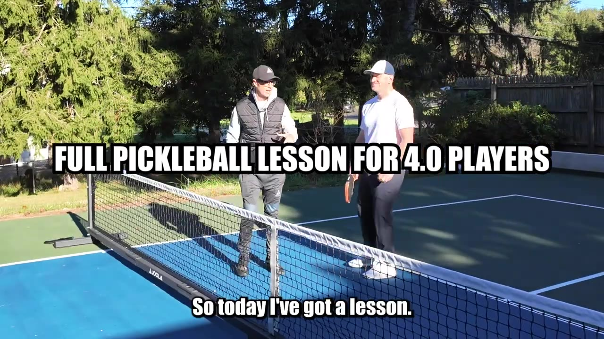
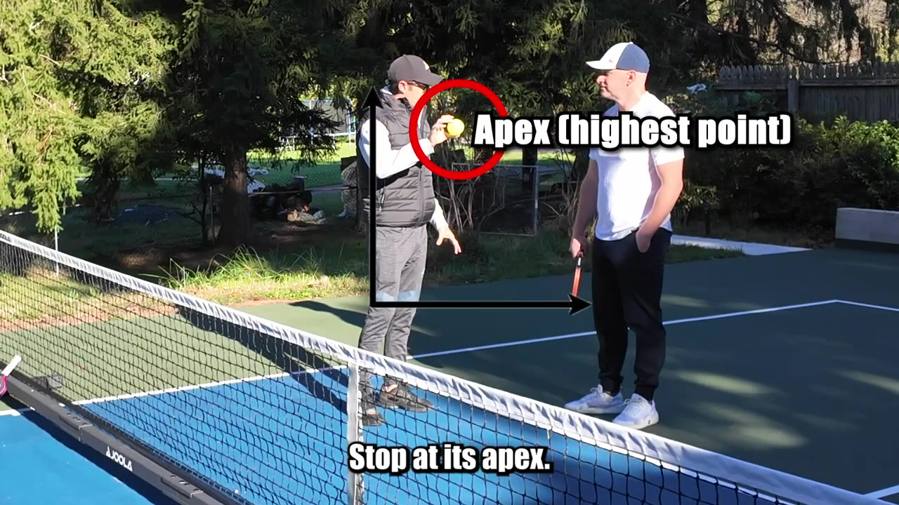
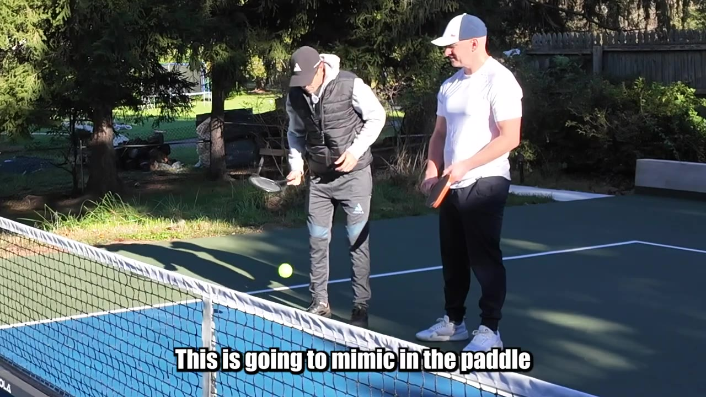
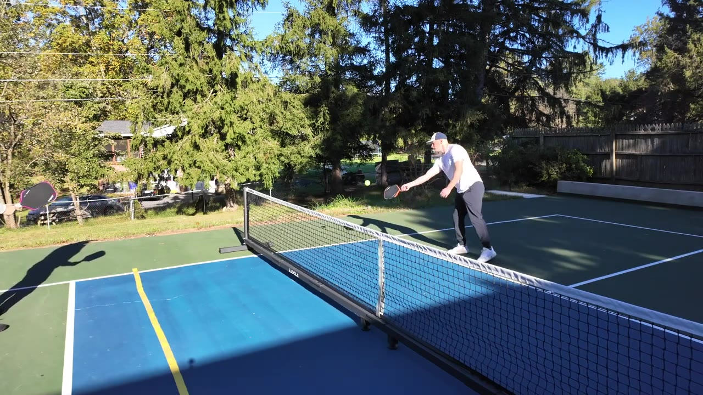
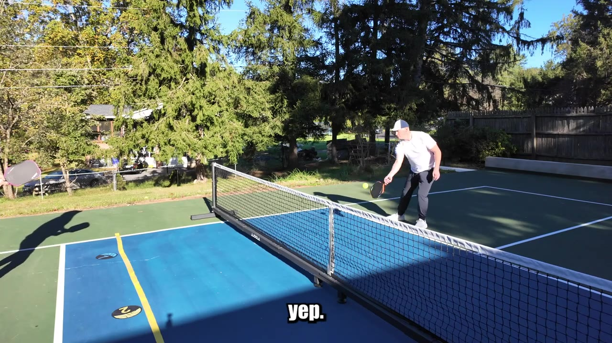
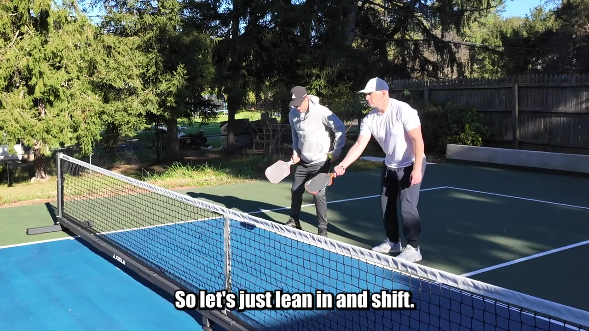
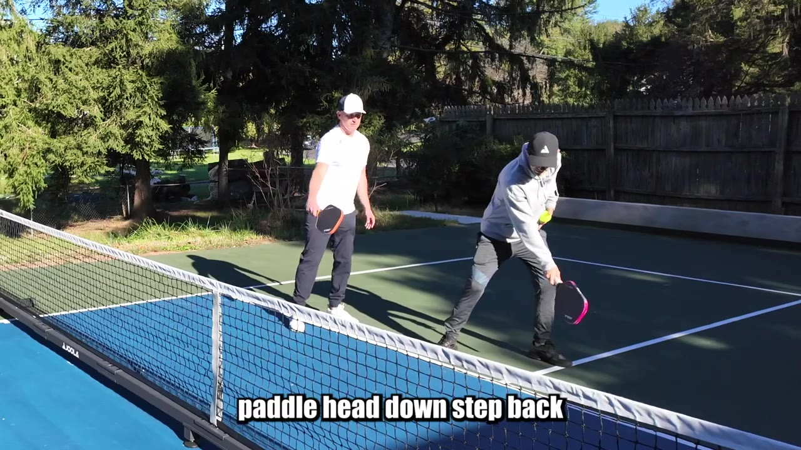
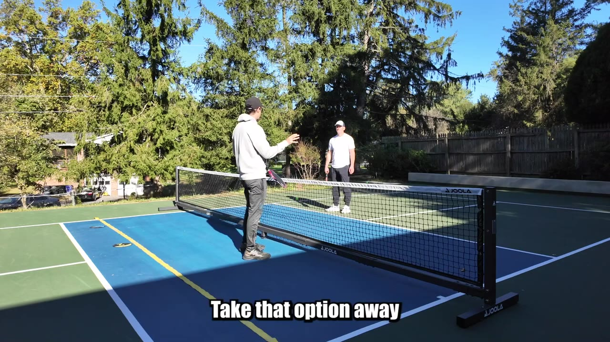
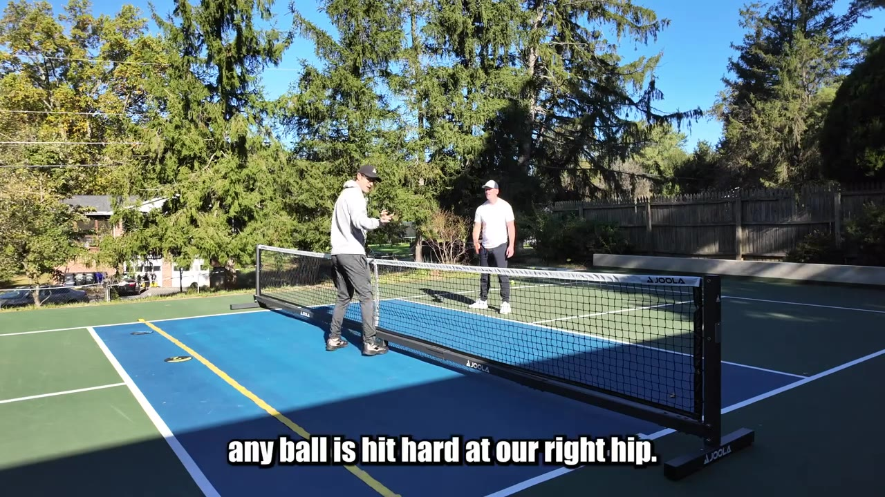

A Full 4.0 Pickleball Lesson, Dink by Dink
A 35-minute on-court lesson built around one idea — win the kitchen by keeping every dink shallow, taking balls out of the air, and never drifting wide.
Watch on YouTubeThe lesson in five reps
- Contact the ball at its apex with an open paddle face — start the paddle below the ball and push forward with the shoulder, don't manipulate it up with your spine.
- Keep dinks shallow. A deep dink past the kitchen line ends the rally; a shallow one nobody can poach.
- Take dinks out of the air when you can — it steals reaction time, lets you hit at a higher point, and keeps you anchored at the kitchen.
- On the backhand, concede the kitchen: paddle head down, step back, push with the shoulder, then return to ready.
- Pinch the middle instead of drifting wide on crosscourt dinks — width takes away your positional pressure and leaves the middle open.
01 · The lesson
Win the kitchen, one dink at a time
Bobby's been playing about a year and a half — call it a 4.0. He gets to the net fine; the trouble is holding position at the kitchen and finishing points once he's there. So the plan is a dinking drill: warm up, then fix what's leaking.

02 · The journey of a ball
Hit it at the apex
Every ball has a life: it lands, you can catch the short hop in the first couple inches, then it ascends to its apex, then it descends. The apex — the highest point — is where the ball is easiest to maneuver. Hit it there and you put less loft on it, which makes it easier to drop into the opponent's court.

03 · The scooper drill
Get the paddle below the ball
You dink because the ball is at or below the level of the net, so you have to swing up. The mistake is manipulating the ball up with the spine and shoulder. Instead, start the paddle below the ball and push forward. The drill: bounce the ball, let it reach its apex, and catch it from underneath — first with a pool-noodle scooper, then with the paddle itself.

A lot of bounces means you didn't catch it at the apex. It's okay.— Josh
04 · Keep it shallow
Land it on the yellow line
Bobby's been keeping dinks at or below a fake yellow line on the court — good. The balls that travel deep, into the green past the kitchen, end rallies fast. Drill it with targets: a "military" left-right-left, alternating blue and gold, so the dinks stay shallow and stop drifting to one side.

05 · Out of the air
Steal their time
Same principle in the air: paddle head open, get below the level of the ball, let the paddle do the work. Taking the ball out of the air takes reaction time away from the opponent, lets you hit at a higher point, and — most importantly — keeps you up at the kitchen instead of getting pulled back.

The whole purpose of pickleball, to play winning pickleball, is get up to the kitchen so we can hit winners.— Josh
06 · Body position
Reach out, don't reach up
The goal is to hit the ball in a comfortable outstretched position — the farther from your body, the higher and easier the shot. Bobby's a little stiff and straight up, so the fix is mechanical: widen the stance, splay the toes slightly, get the shoulders over the knees and the knees over the toes. Then you just reach out instead of leaning and hoping.

Wider stance
feet apart, toes slightly splayed out.
Stack the joints
shoulders over knees, knees over toes.
Reach, don't lift
take the ball outstretched in front, not stiff and upright.
07 · The backhand
Concede the kitchen
The backhand is where Bobby gets attacked. On a good drop to the backhand, the mentality is to concede the kitchen — let them have it — rather than forcing an aggressive shot. Mechanically: get the paddle head down, keep the wrist firm, take a step back, and push with the shoulder. Then get right back to ready.

- Paddle head downdrop it below the level of the ball, wrist firm.
- Step backcreate room when the ball lands near your feet.
- Push with the shoulderuse the ball's momentum, don't muscle it.
- Return to readydon't live back there — recover the position every time.
08 · Open the face
Make the paddle face your face
A pickleball paddle has no strings, the ball is cold plastic, and there's a net in the way — so you can't scoop under and hope. The fix is to start with the face open: make the back of the paddle face your face, keep your spine angle constant, and shovel forward with a shift of weight. No lifting the spine, no flicking the wrist open mid-stroke.

We can't be scooping under and trying to hope the strings, the bracket, catch the ball. We've got to be locked down here to the target.— Josh
09 · Plug the middle
Don't drift wide
With a partner, middle coverage follows the ball: whoever's crosscourt to the ball pinches in to cover the middle. The prevailing habit should be to condense the middle and take that option away. The biggest mistake on crosscourt dinks is drifting to the sideline for accuracy — it feels safer, but it surrenders positional pressure and leaves the middle wide open.

10 · Track and block
Let the hard ones go
Final layer: the outer edge of the paddle tracks the ball like a laser pointer, keeping you neutral but strong to reach either the backhand or forehand. From there you only defend a segment of the court — block anything hit hard down the middle, but let the hard balls at your outer hip and shoulder go out. By the end, Bobby's stacking it all: out of the air, shallow, middle plugged.

That was like five things he wasn't doing before he got here, doing now.— Josh